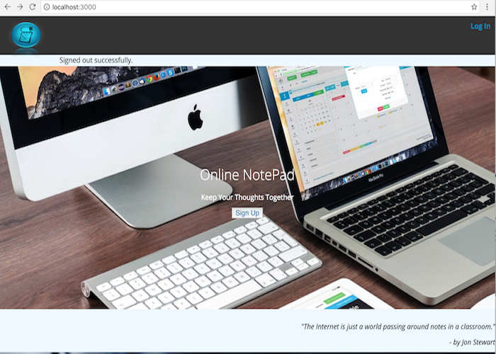

Online NotePad
In a world of technologies the Online NotePad is an Ruby on Rails application
It allows the user to keep all the thoughts, ideas and things that have to be done in a simple form.
Technologies used: HTML, CSS, Ruby, Rails